[TOC]
一、postgresql架构与原理 1.1、体系架构概览 ①PostgreSQL和MySQL相似,也采用典型的C/S模型。
②PostgreSQL体系结构分两部分
——实例 instance
——磁盘存储
③实例 instance 包括
——进程
——内存存储结构
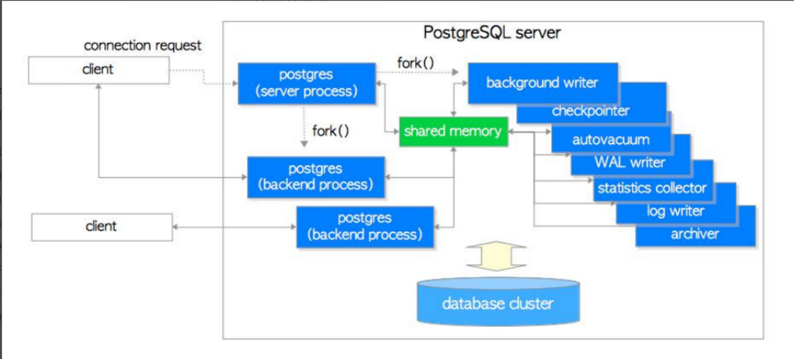
1.2、进程和内存结构 PostgreSQL是进程架构模型，MySQL是线程架构模型。
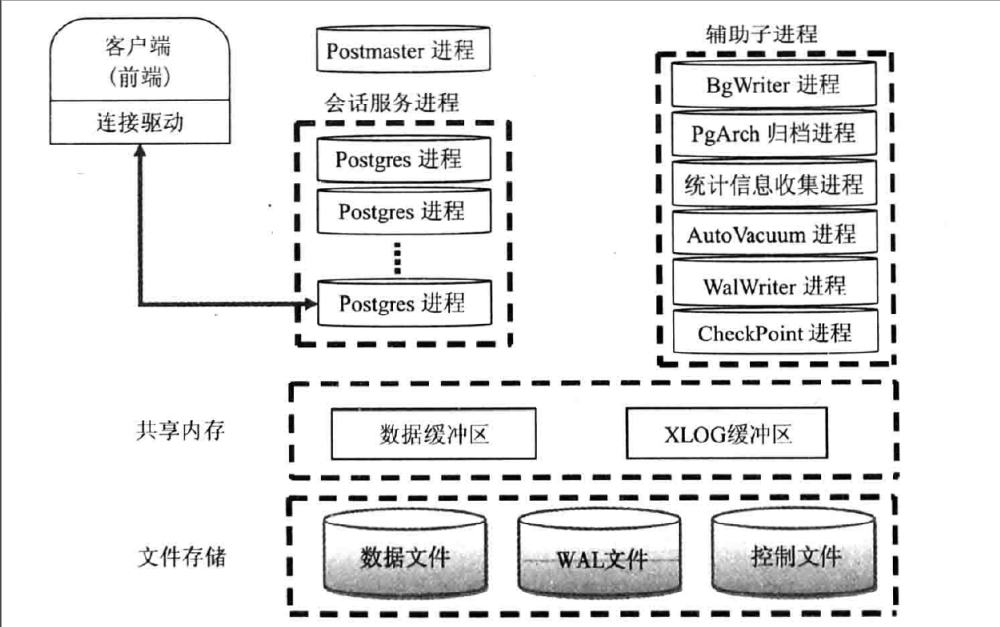
1.2.1、进程 Postmaster 主进程
它是整个数据库实例的主控制进程，负责启动和关闭该数据库实例。
实际上,使用pg ctl来启动数据库时，pg_ctl也是通过运行postgres来启动数据库的，只是它做了一些包装,更容易启动数据库。
它是第一个PostgreSQL进程，此主进程还会fork出其他子进程，并管理它们。
当用户和PostgreSQL建立连接时，首先是和Postmaster进程建立连接。首先，客户端会发出身份验证的信息给Postmaster进程，Postmaster进程根据消息中的信息进行身份验证判断，如果验证通过，它会fork出一个会话子进程为这个连接服务。
当某个服务进程出现错误的时候，Postmaster主进程会自动完成系统的恢复。恢复过程中会停掉所有的服务进程,然后进行数据库数据的一致性恢复,等恢复完成后，数据库又可以接受新的连接。
验证功能是通过配置文件pg_hba.conf和用户验证模块来提供。
postmaster 程序是指向postgres的软链接
[root@ubuntu2004 ~]
BgWriter 后台写进程
为了提高插入、删除和更新数据的性能，当往数据库中插入或者更新数据时，并不会马上把数据持久化到数据文件中,而是先写入Buffer中
该辅助进程可以周期性的把内存中的脏数据刷新到磁盘中
WalWriter 预写式日志进程
WAL是write ahead log的缩写，WAL log旧版中称为xlog，相当于MySQL中Redo log
预写式日志是在修改数据之前，必须把这些修改操作记录到磁盘中，这样后面更新实际数据时，就不需要实时的把数据持久化到文件中了。即使机器突然宕机或者数据库异常退出， 导致一部分内存中的脏数据没有及时的刷新到文件中，在数据库重启后，通过读取WAL日志，并把最后一部分WAL日志重新执行一遍，就能恢复到宕机时的状态了
WAL日志保存在pg_wal目录(早期版本为pg_xlog) 下。每个xlog 文件默认是16MB,为了满足恢复要求，在pg_wal目录下会产生多个WAL日志，这样就可保证在宕机后，未持久化的数据都可以通过WAL日志来恢复，那些不需要的WAL日志将会被自动覆盖
Checkpointer 检查点进程
检查点(Checkpoints)是事务序列中的点,保证在该点之前的所有日志信息都更新到数据文件
中。
在检查点时，所有脏数据页都冲刷到磁盘并且向日志文件中写入一条特殊的检查点记录。在发生崩溃的时候，恢复器就知道应该从日志中的哪个点（称做 redo 记录）开始做 REDO 操作，因为在该记录前的对数据文件的任何修改都已经在磁盘上了。在完成检查点处理之后，任何在redo记录之前写的日志段都不再需要，因此可以循环使用或者删除。在进行 WAL 归档的时候，这些日志在循环利用或者删除之前应该必须先归档保存
检查点进程 (CKPT) 在特定时间自动执行一个检查点,通过向数据库写入进程 (BgWriter) 传递消息来启动检查点请求
AutoVacuum 自动清理进程
执行delete操作时，旧的数据并不会立即被删除，在更新数据时，也不会在旧的数据上做更新，而是新生成一行数据。旧的数据只是被标识为删除状态，在没有并发的其他事务读到这些旧数据时，它们才会被清除掉
autovacuum lanucher 负责回收垃圾数据的master进程,如果开启了autovacuum的话,那么postmaster会fork这个进程
autovacuum worker 负责回收垃圾数据的worker进程,是lanucher进程fork出来的
PgStat 统计数据收集进程
此进程主要做数据的统计收集工作
收集的信息主要用于查询优化时的代价估算。统计的数据包括对一个表或索引进行的插入、删除、更新操作，磁盘块读写的次数以及行的读次数等。
系统表pg_statistic中存储了PgStat收集的各类统计信息
PgArch 归档进程
默认没有此进程,开启归档功能后才会启动archiver进程
WAL日志文件会被循环使用，也就是说WAL日志会被覆盖,利用PgArch进程会在覆盖前把WAL日志备份出来,类似于binlog,可用于备份功能
PostgreSQL 从8.X版本开始提供了PITR ( Point-In-Time-Recovery)技术，即就是在对数据厍进行过一次全量备份后，该技术将备份时间点后面的WAL日志通过归档进行备份，将来可以使用数据库的全量备份再加上后面产生的WAL 日志，即可把数据库向前恢复到全量备份后的任意一个时间点的状态
SysLogger 系统日志进程
默认没有此进程,配置文件 postgresql.conf 设置参数logging_collect设置为“on”时，主进程才会启动SysLogger辅助进程
它从Postmaster主进程、所有的服务进程以及其他辅助进程收集所有的stderr输出，并将这些输出写入到日志文件中
startup 启动进程
用于数据库恢复的进程
Session 会话进程
每一个用户发起连接后，一旦验证成功,postmaster进程就会fork—个新的子进程负责连接此
用户。
通常表现为进程形式： postgres postgres [local] idle
案例: 查看进程
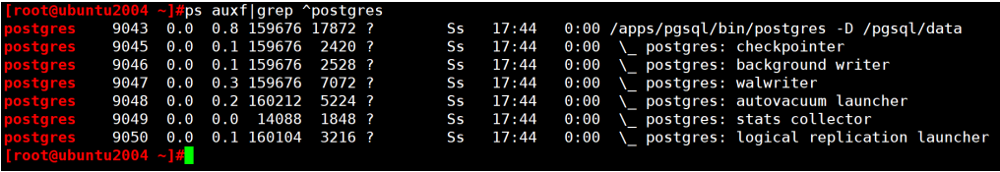
1.2.2、内存结构 PostgreSQL的内存空间包括共享内存和本地内存两部分
共享内存
PostgreSQL启动后，会生成一块共享内存，共享内存主要用做数据块的缓冲区，以便提高读写性能。WAL日志缓冲区和CLOG(Commit log)缓冲区也存在于共享内存中。除此以外，一些全局信息也保存在共享内存中，如进程信息、锁的信息、全局统计信息等。
PostgreSQL 9.3之前的版本与Oracle数据库一样，都是使用“System V”类型的共享内存，但到PostgreSQL9.3之后，PostgreSQL使用mmap()方式共享内存,好处能使用较大的共享内存。
可以通过配置postgresql.conf文件中shared_buffers 指定，默认128M，建议是内存的50%
本地内存
后台服务进程除访问共享内存外，还会申请分配一些本地内存，以便暂存一些不需要全局存储的数据。
都可以通过在配置postgresql.conf文件中指定
这些内存缓冲区主要有以下几类：
temp_buffers :用于访问临时表的本地缓冲区，默认为8M
work_mem:内部排序操作和Hash表在使用临时磁盘文件之前使用的内存缓冲区,默认为4M
maintenance_work_mem:在维护性操作(比如 VACUUM、CREATE INDEX和ALTERTABLE ADD FOREIGN KEY 等）中使用的内存缓冲区，默认为64M
1.3、数据更新过程 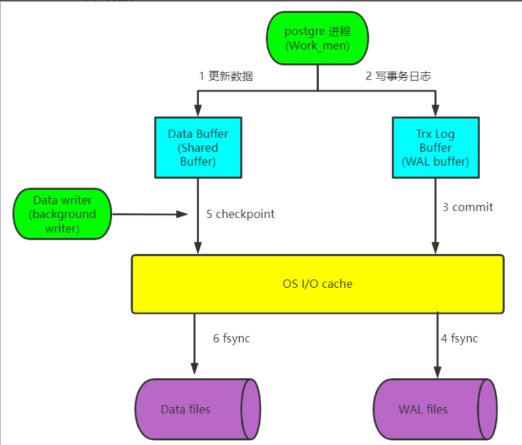
①先将数据库文件中的更改的数据加载至内存
②在内存更新数据
③将日志写入内存WAL的缓存区
④将日志提交，将日志写入操作系统 cache
⑤同步日志到磁盘
⑥后台写数据库的更新后的数据到操作系统 cache
⑦写完数据后，更新检查点checkpoint
⑧同步数据到磁盘
二、基于流复制完成postgresql的高可用 2.1、基础环境准备 1 2 3
2.2、Master节点配置 1 2 3 4 5 6 7 8 9 10 11 12 13 14 15 16 17 $psql $vim /pgsql/data/pg_hba.conf$vim /pgsql/data/postgresql.conf'[ ! -f /archive/%f ] && cp %p /archive/%f' $pg_ctl restart
2.3、Standby节点配置 1 2 3 4 5 6 7 8 9 10 11 12 13 14 15 16 17 18 19 20 21 22 23 24 25 26 27 28 29 30 31 $pg_ctl stop$rm -rf /pgsql/data/* $rm -rf /archive/* $rm -rf /pgsql/backup/* $pg_basebackup -D /pgsql/backup/ -Ft -Pv -Urepluser -h 10.0.0.184 -p 5432 -R $ls /pgsql/backup $tar xf /pgsql/backup/base.tar -C /pgsql/data$tar xf /pgsql/backup/pg_wal.tar -C /archive/$ls /archive $ls /pgsql/data $vim /pgsql/data/postgresql.conf'host=10.0.0.184 port=5432 user=repluser password=123456' 'cp /archive/%f %p' $pg_ctl start
2.4、监控同步状态 2.4.1、查看主库状态 1 2 3 4 5 6 7 8 9 10 11 12 13 14 15 16 17 18 19 20 21 22 23 24 25 26 27 28 29 30 31 32 33 34 35 36 37 38 39 40 41 42 43 [root@Rocky ~]in production
2.4.2、查看从库状态 1 2 3 4 5 6 7 8 9 10 11 12 13 14 15 id | name in a read-only transactionin archive recovery
2.5、切换主从 2.5.1、将从库切换为主库 1 2 3 4 5 6 7 8 9 10 11 12 [postgres@Rocky ~]$pg_ctl promotefor server to promote.... done $pg_controldata in production $pg_ctl restart
2.5.2、将原主库切换为从库 1 2 3 4 5 6 7 8 9 10 11 12 13 14 15 16 17 18 19 20 21 22 23 24 25 26 27 28 29 30 31 32 33 34 35 36 37 38 $pg_ctl stop$rm -rf /pgsql/data/* $rm -rf /archive/* $rm -rf /pgsql/backup/*$pg_basebackup -D /pgsql/backup/ -Ft -Pv -Urepluser -h 10.0.0.185 -p 5432 -R $ls /pgsql/backup $tar xf /pgsql/backup/base.tar -C /pgsql/data$tar xf /pgsql/backup/pg_wal.tar -C /archive/$vim /pgsql/data/postgresql.conf'host=10.0.0.185 port=5432 user=repluser password=123456' 'cp /archive/%f %p' $pg_ctl start$pg_controldata in archive recovery
2.5.3、验证同步状态 1 2 3 4 5 6 7 8 9 10 11 12 13 14 15 16 #在新主服务器插入数据，看从服务器是否更新'li' ); id | name ----+-------------------------------- 1 | zhang 34 | li id | name ----+-------------------------------- 1 | zhang 34 | li
三、实现postgresql的时间点还原 3.1、备份 1 2 3 4 5 6 7 8 9 10 11 12 13 14 15 16 17 18 19 20 21 22 23 24 25 26 27 28 29 30 31 32 33 34 35 36 37 38 39 40 41 42 43 44 45 46 47 48 49 50 51 52 53 54 55 56 57 58 59 60 $vim /pgsql/data/postgresql.conf'test ! -f /archive/%f &&cp %p /archive/%f' $pg_ctl restart$psql $vim /pgsql/data/pg_hba.conf$pg_ctl restart$psql test ~]$vim /pgsql/data/postgresql.conf 'test ! -f /archive/%f && cp %p /archive/%f' test ~]test ~]$pg_ctl restarttest ~]test ~]test ~]
3.2、还原 1 2 3 4 5 6 7 8 9 10 11 12 13 14 15 16 17 18 19 20 21 22 23 24 25 26 27 28 29 30 31 32 33 34 35 36 37 38 39 40 41 42 43 44 45 46 47 48 49 50 51 52 53 54 55 56 57 58 59 60 61 62 63 64 65 66 67 68 69 70 71 72 73 74 75 # 在服务器上切换归档日志 # 在测试机上还原，先停止服务 # 在测试机上将数据进行还原 # 查看故障点事务ID # 可以确认删库的事务id 是743，所有恢复到742即可（恢复到2022-11-03 11:39:07.796583时间点也可以） # 修改配置文件postgresql.conf # 也可以通过下面方式指定还原至的位置 # 当前无法写入 # 查看此时的状态 # 查看此时的状态
四、规划高可用的LAMP，要求wordpress网站放在NFS共享存储上，并且用户可以正常发布博客，上传图片。尝试更新wordpress版本，测试网站仍可用 4.1、环境准备 1 2 3 4 5 6 7 8 9 10 11 共设6 台主机10.0.0.184 10.0.0.185 10.0.0.186 10.0.0.216 10.0.0.217 10.0.0.218
4.2、服务器配置 4.2.1、web服务器配置 1 2 3 4 5 6 7 8 9 10 11 12 13 14 15 16 17 18 19 20 21 22 23 24 25 26 27 28 29 30 31 32 33 34 35 36 37 38 39 40 41 42 43 44 45 46 47 48 安装LAP，需先安装以下包for 10.0.0.216:for 10.0.0.216:
4.2.2、NFS服务器配置 4.2.2.1、NFS1基于存储wordpress图片设置 如果不设置NFS服务器，那wordpress里面的图片只储存在web服务器上（/var/www/html/wp-content/uploads)，如果服务器坏了，则图片会丢失（其他数据不会丢失，其他数据存储在mysql数据库里）
1 2 3 4 5 6 7 8 9 10 [root@nfs1 ~]#mkdir -p /data/www #此文件夹是存放共享图片的# 共享地址 读写权限，压榨所有用户，指定压榨后映射的用户uid为666的用户 # 在往共享文件里存放图片，需要给权限
4.2.2.2、基于主NFS服务器和备份NFS服务器进行配置 rsync 常用于做为 linux系统下的数据镜像备份工具，实现远程同步，支持本地复制，或者与其他SSH、rsync主机同步数据，支持增量备份，配合任务计划，rsync能实现定时或间隔同步，配合inotify或sersync，可以实现触发式的实时数据同步
1 2 3 4 5 6 7 8 9 10 11 12 13 14 15 16 17 18 19 20 21 22 23 24 25 26 27 28 29 30 31 32 33 34 35 36 37 38 39 40 41 42 43 44 45 46 47 48 49 50 51 52 53 54 55 56 57 58 59 60 61 62 63 64 65 66 67 68 69 70 71 72 73 74 75 76 77 78 [root@nfs2 ~]log file = /var/log/rsyncd.logdir read only = no users = rsyncuser dir set the system paramecho 50000000 > /proc/sys/fs/inotify/max_user_watchesecho 327679 > /proc/sys/fs/inotify/max_queued_eventscommand param
4.2.3、DNS配置 设置DNS，主要是为了将ip地址解析为网址
4.2.3.1、DNS服务器配置 1 2 3 4 5 6 7 8 9 10 11 12 13 14 15 16 17 18 19 20 21 22 23 24 25 26 27 28 29 30 31 32 33 34 35 36 37 [root@dns ~]"jiagoukecheng.org" IN {type master;"jiagoukecheng.org.zone" ;$TTL 1D
4.2.3.2、本地DNS配置 将本地的DNS指向10.0.0.218
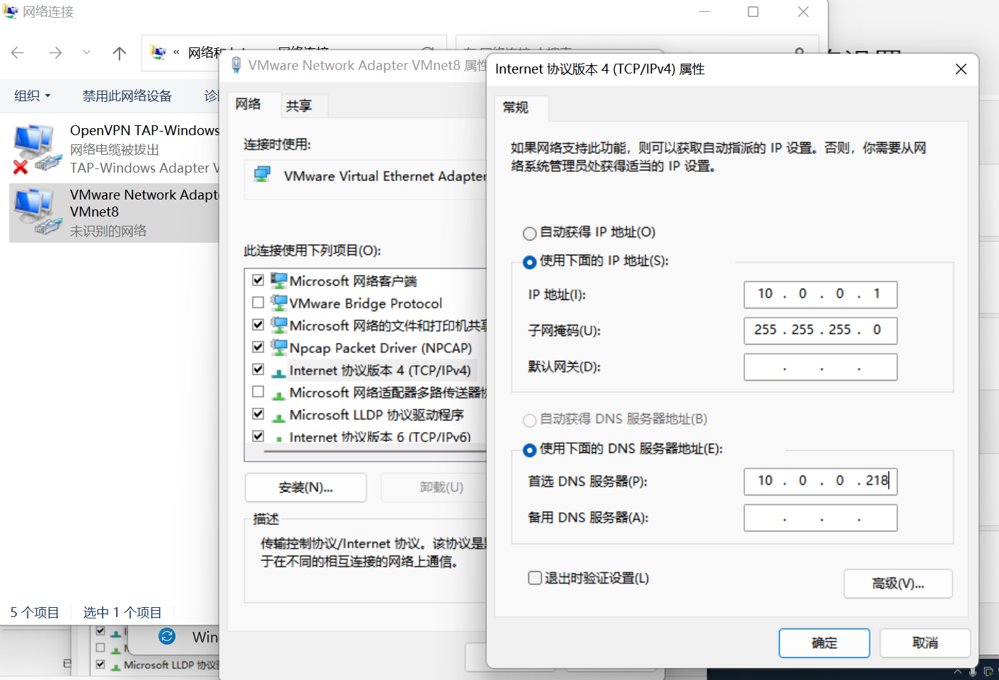
4.2.4、mysql服务器配置 1 2 3 4 5 6 [root@mysql ~]'10.0.0.%' identified by '123456' ; '10.0.0.%' ;
4.3、登录wordpress 注意：网站创建完成后，登录前台网址是：www.jiagoukecheng.org
登录后台网址是：www.jiagoukecheng.org/wp-admin
①浏览器输入网址：www.jiagoukecheng.org
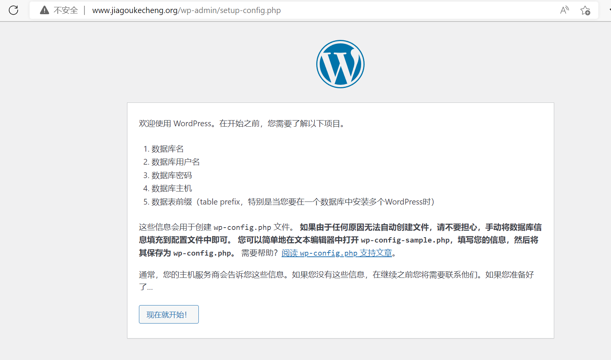
②连接数据库
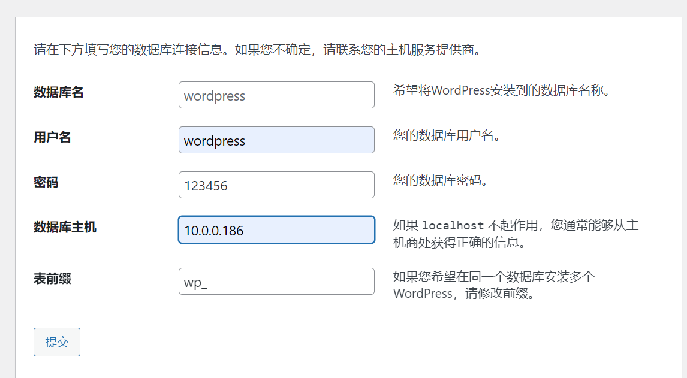
③运行安装程序，设置网站的用户名和密码
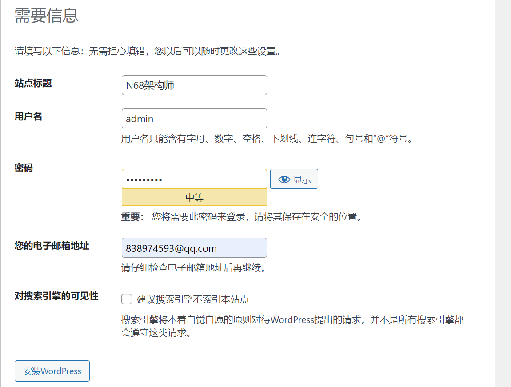
④登录网站
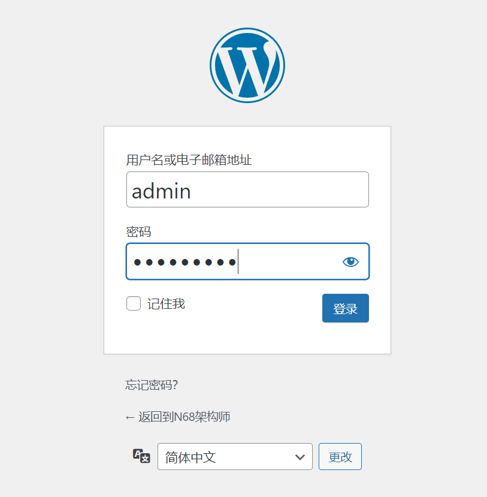
4.4、编写文章，并查看 ①写文章插入图片
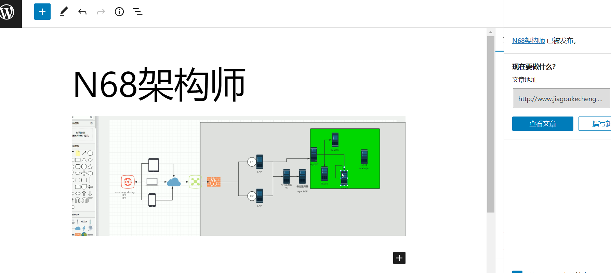
②直接网址查看
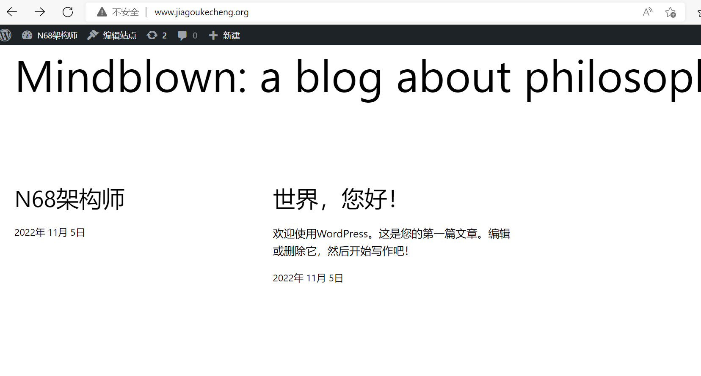
③web服务器查看存储位置
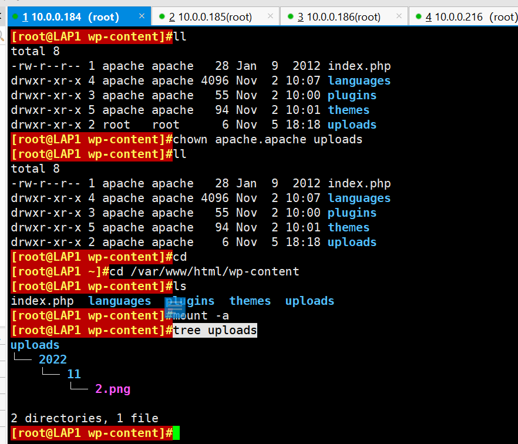
④nfs服务器查看是否存储
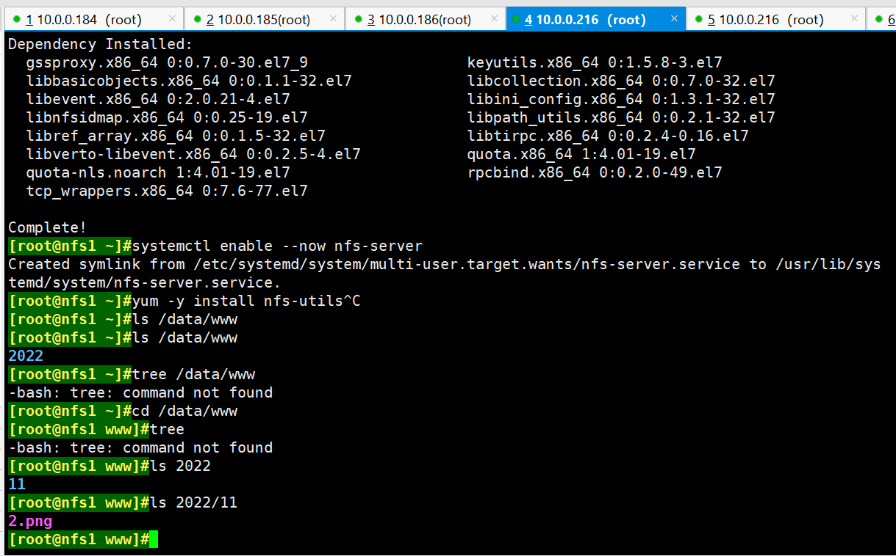
⑤查看NFS备份服务器是否共享
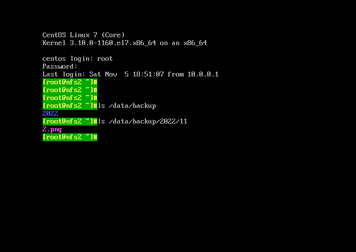
五、redis数据类型有哪些 共有5中类型：字符串string、列表list、集合set、有序集合sorted set、哈希hash
5.1、字符串string 字符串是一种最基本的Redis值类型。Redis字符串是二进制安全的，这意味着一个Redis字符串能包含任意类型的数据，例如： 一张JPEG格式的图片或者一个序列化的Ruby对象。一个字符串类型的值最多能存储512M字节的内容。Redis 中所有 key 都是字符串类型的。此数据类型最为常用
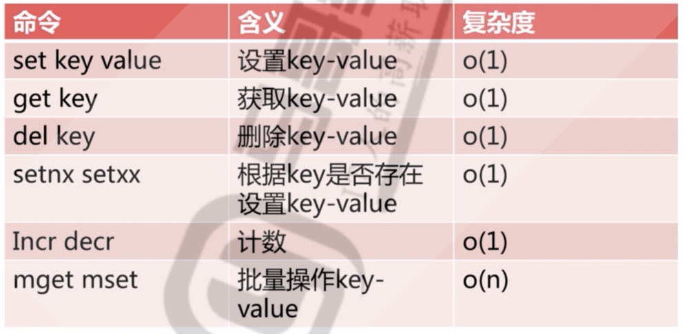
利用INCR命令簇（INCR, DECR, INCRBY,DECRBY)来把字符串当作原子计数器使用。
5.2、列表list ①Redis列表就是简单的字符串数组，按照插入顺序排序. 支持双向读写,可以添加一个元素到列表的头部（左边）或者尾部（右边），一个列表最多可以包含2^32-1=4294967295个元素，每个列表元素有下标来标识,下标 0 表示列表的第一个元素，以 1 表示列表的第二个元素，以此类推。 也可以使用负数下标，以 -1 表示列表的最后一个元素， -2 表示列表的倒数第二个元素，元素值可以重复，常用于存入日志等场景，此数据类型比较常用
②列表特点：有序、可重复、左右都可以操作
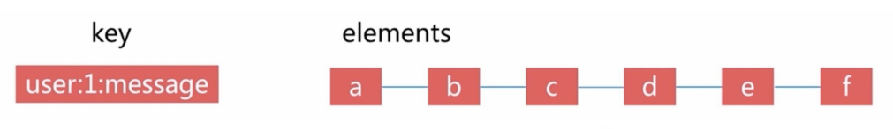
5.3、集合set ①Set 是一个无序的字符串合集，同一个集合中的每个元素是唯一无重复的，支持在两个不同的集合中对数据进行逻辑处理，常用于取交集,并集,统计等场景,例如: 实现共同的朋友
②集合特点：无序、无重复、集合间操作
5.4、有序集合sorted set ①Redis有序集合和Redis集合类似，是不包含相同字符串的合集。它们的差别是，每个有序集合的成员都关联着一个双精度浮点型的评分，这个评分用于把有序集合中的成员按最低分到最高分排序。有序集合的成员不能重复,但评分可以重复,一个有序集合中最多的成员数为 2^32 - 1=4294967295个，经常用于排行榜的场景
②有序集合特点：有序、无重复元素、每个元素是由score和value组成、score 可以重复、value 不可以重复
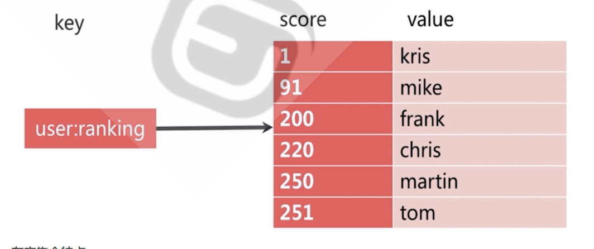
5.5、哈希hash ①hash 即字典, 用于保存字符串字段field和字符串值value之间的映射，即key/value做为数据部分,hash特别适合用于存储对象场景。一个hash最多可以包含2^32-1 个key/value键值对
②哈希特点：无序、k/v 对、适用于存放相关的数据
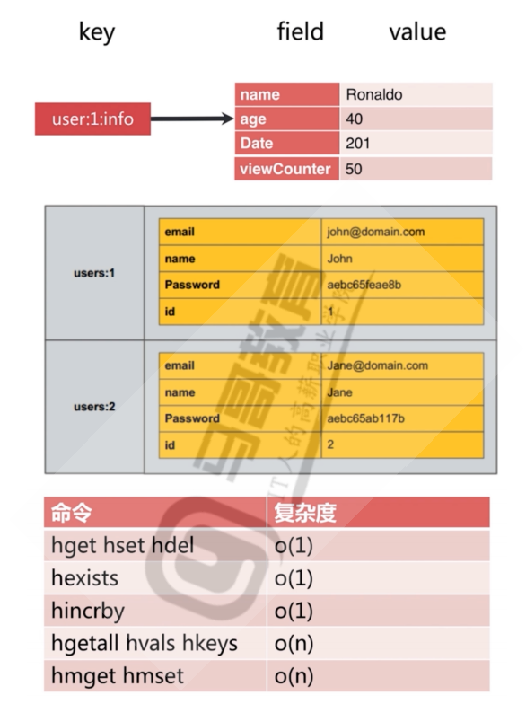
六、redis RDB和AOF比较 6.1、RDB的优缺点 6.1.1、RDB的优点 ①RDB快照只保存某个时间点的数据，恢复的时候直接加载到内存即可，不用做其他处理，这种文件适合用于做灾备处理.可以通过自定义时间点执行redis指令bgsave或者save保存快照，实现多个版本的备份。
比如: 可以在最近的24小时内，每小时备份一次RDB文件，并且在每个月的每一天，也备份一个RDB文件。这样的话，即使遇上问题，也可以随时将数据集还原到指定的不同的版本。
②RDB在大数据集时恢复的速度比AOF方式要快
6.1.2、RDB的缺点 ①不能实时保存数据，可能会丢失自上一次执行RDB备份到当前的内存数据
如果需要尽量避免在服务器故障时丢失数据，那么RDB并不适合。虽然Redis允许设置不同的保存点（save point）来控制保存RDB文件的频率，但是，因为RDB文件需要保存整个数据集的状态，所以它可能并不是一个非常快速的操作。因此一般会超过5分钟以上才保存一次RDB文件。在这种情况下，一旦发生故障停机，就可能会丢失较长时间的数据。
②在数据集比较庞大时，fork()子进程可能会非常耗时，造成服务器在一定时间内停止处理客户端请求,如果数据集非常巨大，并且CPU时间非常紧张的话，那么这种停止时间甚至可能会长达整整一秒或更久。另外子进程完成生成RDB文件的时间也会花更长时间
6.2、AOF的优缺点 6.2.1、AOF的优点 ①数据安全性相对较高，根据所使用的fsync策略(fsync是同步内存中redis所有已经修改的文件到存储设备)，默认是appendfsync everysec，即每秒执行一次 fsync,在这种配置下，Redis 仍然可以保持良好的性能，并且就算发生故障停机，也最多只会丢失一秒钟的数据( fsync会在后台线程执行，所以主线程可以继续努力地处理命令请求)
②由于该机制对日志文件的写入操作采用的是append模式，因此在写入过程中不需要seek, 即使出现宕机现象，也不会破坏日志文件中已经存在的内容。然而如果本次操作只是写入了一半数据就出现了系统崩溃问题，不用担心，在Redis下一次启动之前，可以通过 redis-check-aof 工具来解决数据一致性的问题
③Redis可以在 AOF文件体积变得过大时，自动地在后台对AOF进行重写,重写后的新AOF文件包含了恢复当前数据集所需的最小命令集合。整个重写操作是绝对安全的，因为Redis在创建新 AOF文件的过程中，append模式不断的将修改数据追加到现有的 AOF文件里面，即使重写过程中发生停机，现有的 AOF文件也不会丢失。而一旦新AOF文件创建完毕，Redis就会从旧AOF文件切换到新AOF文件，并开始对新AOF文件进行追加操作。
④AOF包含一个格式清晰、易于理解的日志文件用于记录所有的修改操作。事实上，也可以通过该文件完成数据的重建
AOF文件有序地保存了对数据库执行的所有写入操作，这些写入操作以Redis协议的格式保存，因此 AOF文件的内容非常容易被人读懂，对文件进行分析(parse)也很轻松。导出（export)AOF文件也非常简单:举个例子，如果不小心执行了FLUSHALL.命令，但只要AOF文件未被重写，那么只要停止服务器，移除 AOF文件末尾的FLUSHAL命令，并重启Redis ,就可以将数据集恢复到FLUSHALL执行之前的状态。
6.2.2、AOF的缺点 ①即使有些操作是重复的也会全部记录，AOF 的文件大小一般要大于 RDB 格式的文件
②AOF 在恢复大数据集时的速度比 RDB 的恢复速度要慢
③如果 fsync 策略是appendfsync no, AOF保存到磁盘的速度甚至会可能会慢于RDB
④bug 出现的可能性更多
6.3、RDB和AOF的选择 ①如果主要充当缓存功能,或者可以承受较长时间,比如数分钟数据的丢失, 通常生产环境一般只需启用RDB
即可,此也是默认值
②如果一点数据都不能丢失,可以选择同时开启RDB和AOF
③一般不建议只开启AOF
七、redis配置文件详解 resdis.conf文件内容的解释
1 2 3 4 5 6 7 8 9 10 11 12 13 14 15 16 17 18 19 20 21 22 23 24 25 26 27 28 29 30 31 32 33 34 35 36 37 38 39 40 41 42 43 44 45 46 47 48 49 50 51 52 53 54 55 56 57 58 59 60 61 62 63 64 65 66 67 68 69 70 71 72 73 74 75 76 77 78 79 80 81 82 83 84 85 86 87 88 89 90 91 92 93 94 95 96 97 98 99 100 101 102 103 104 105 106 107 108 109 110 111 112 113 114 115 116 117 118 119 120 121 122 123 124 125 126 127 128 129 130 131 132 133 134 135 136 137 138 139 140 141 142 143 144 145 146 147 148 149 150 151 152 153 154 155 156 157 158 159 160 161 162 163 164 165 166 bind 0.0.0.0 yes timeout 0 "/path/redis.log" yes yes yes yes dir ./ yes yes (默认设置)，从库会继续响应客户端的读请求，此为建议值"SYNC with master in progress" 。yes "appendonly.aof" yes yes yes